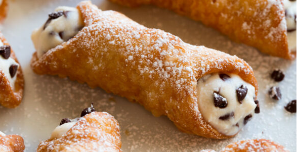

Cannoli

Ingredients
- Flour
- Sugar
- Salt
- Butter
- Marsala wine
- Egg
- Vegatable oil
- Ricotta
- Powdered sugar
- Mini chocolate chips
- Cinnamon
- Pistachios(optional)
Directions
- Mix dry ingredients in a food processor.
- Add marsala wine and egg and pulse to bring together.
- Heat oil in pot.
- Roll dough out very thin on a floured surface.
- Cut into rounds or ovals (about 4-inches each).
- Wrap rounds around greased cannoli forms, brush top or bottom edge with egg white to seal shut.
- Remove cannoli shells and drain on paper towels.
- Remove shells from forms, let forms cool and repeat process.
- Make cannoli filling.
- Let shells cool completely then fill with cannoli filling.
Please see Cooking Classy website for original recipe and more like it!
Contact Me
Email:dominique.holt@umconnect.umt.edu
32 Campus Dr.
Missoula, MT